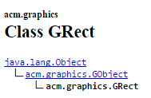
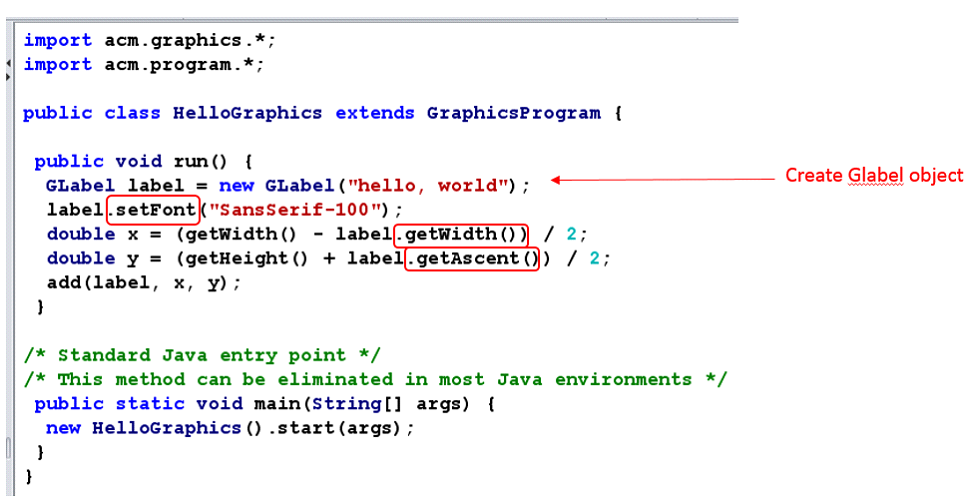

In early 2004, the ACM created the Java Task Force (JTF) to review the Java language, APIs, and tools from the perspective of introductory computing education and to develop a stable collection of pedagogical resources that will make it easier to teach Java to first-year computing students without having those students overwhelmed by its complexity.
This lab is designed to give you a gentle introduction into how to use the JTF materials in the context of an introductory programming course.
Feel free to use the following resources (especially the free book, the Java API, and the ACM JTF tutorial). If you are not clear about a certain class and its functionality at any point during the semester, the tutorial and the book may give you better explanations and examples than the API page (which is much more dense).
http://people.reed.edu/~jerry/121/materials/artsciencejava.pdf
ACM JTF URL: http://cs.stanford.edu/people/eroberts/jtf/
ACM Java API: http://cs.stanford.edu/people/eroberts/jtf/javadoc/student/index.html
ACM JTF Tutorial: http://cs.stanford.edu/people/eroberts/jtf/tutorial/Tutorial.pdf
The programs that you write using ACM libraries are applets (called JApplet), which are programs that run in the context of a web browser. These are going to be one of three types: GraphicsProgram, ConsoleProgram and DialogProgram.
GraphicsProgram: Program whose window is used for drawing graphics.
ConsoleProgram: Program whose window contains a console (loosely: a terminal).
DialogProgram: Program that takes its input from a IODialog object.
Feel free to explore these 3 classes in the ACM Java API documentation.
Before you use these classes in your programs you need to import them from the class library. Classes in ACM Java library are grouped into packages
import pacakagename.className;
import acm.program.DialogProgram;import acm.program.*;The best way to learn a new programming language is by writing programs in it. Let's write a first program that prints "hello, world" in the console.
Program that installs a console in the window. This is like a terminal window where all your user interactions with program (input/output) will be taking place. A ConsoleProgram program looks something like this:
When you compile and run your program, the main() method will run. It automatically calls the init() method first and the run() method next. The init() method is optional; this is where you place your initialization code. For example, initialization code might include: code for creating objects, initializing some values etc. The run() method is where you place the major part of your code that you want to run.
Let us start with an example. Write the following program in DrJava:
/*
* File: HelloConsole.java
* -----------------------
* This program displays the message "hello, world" and is inspired
* by the first program "The C Programming Language" by Brian
* Kernighan and Dennis Ritchie. This version displays its message
* using a console window.
*/
import acm.program.ConsoleProgram;
public class HelloConsole extends ConsoleProgram
{
public void run()
{
this.println("hello, world");
}
}
Save it as HelloConsole.java in your Lab2 folder in your home directory. Compile and run the program. If everything is working, the computer should pop up a console window that looks something like this:
This is a simple program that prints “hello, world” to the console. Since no initialization takes place, we omitted the init() method. The statement this.println("hello, world"); calls the println() method defined in the ConsoleProgram class. Any public method/inherited method defined in ConsoleProgram can be called in our program. To figure out which methods are defined in a Java library class, you need to look at the the API page for that class. Since ConsoleProgram is an ACM library class (not a standard Java library class) you need to open it in ACM Java library documentation (http://cs.stanford.edu/people/eroberts/jtf/javadoc/student/index.html). Locate and click on ConsoleProgram under the “All Classes” tab on the left-hand side.
The methods you can call in your program (that extends ConsoleProgram) are listed under the Method Summary and Inherited Method Summary. All of the input (read) methods and output (print) methods are listed under inherited methods:
You can call any of these methods in your program. To call a method of a class, say X, we generally need to create an object from this class and call the method on it (we will cover this in more detail in part 2). However, you can directly call a method of X without creating objects of X in another class (e.g. HelloConsole.java) if it contains the suffix “extends X” in its class definition.
For example, note that in our HelloConsole program this was the case (i.e., it extends ConsoleProgram):
public class HelloConsole extends ConsoleProgram
{
To call a method, you simply give the method name (optionally, with a list of arguments, if specified). If there is a return value, you can capture it in a matching data type variable.
Example 1: no input arguments, no return value
Example use: this.println();
Example 2: no input arguments, has a return value
Example use: String title = this.getTitle();
Example 3: has arguments, has a return value

Example use: boolean continue = this.readBoolean("Do you wish to continue?");
This basic rule of calling methods applies when you want to call a method of any class X (e.g., ConsoleProgram) in another class Y (e.g., HelloConsole) that extends X.
Program that takes its input from a IODialog object. The syntax is the same as that of a ConsoleProgram; the only difference is that we extend DialogProgram instead.
Write and save the following program as HelloDialog.java:
/*
* File: HelloDialog.java
* -----------------------
* This program displays the message "hello, world" and is inspired
* by the first program "The C Programming Language" by Brian
* Kernighan and Dennis Ritchie. This version displays its message
* in a dialog box.
*/
import acm.program.DialogProgram;
public class HelloDialog extends DialogProgram
{
public void run()
{
this.println("hello, world");
}
}
If you compile and run the HelloDialog.java program in precisely the same way that you ran HelloConsole.java, the "hello, world" message won’t appear in a console window. In fact, the program doesn’t create a program frame at all. Instead, the program pops up an interactive dialog box that looks something like this (although the precise format of the display will vary depending on what operating system you are using and what “look and feel” it defines for Java applications):
Display graphics on a canvas (labels, rectangles etc.). The syntax here is again similar:
Note that in addition to importing GraphicsProgram class, we are also importing all classes in acm.graphics package. Go and explore classes in this package in the ACM API. You will see these are classes representing graphical objects (e.g. GLabel for labels, GRect for rectangles) that you may want to place on the canvas when running your graphics program.
Write and save the following program as HelloGraphics.java:
/*
* File: HelloGraphics.java
* ------------------------
* This program displays the message "hello, world" and is inspired
* by the first program "The C Programming Language" by Brian
* Kernighan and Dennis Ritchie. This version displays the message
* graphically.
*/
import acm.graphics.*;
import acm.program.*;
public class HelloGraphics extends GraphicsProgram
{
public void run()
{
GLabel label = new GLabel("hello, world");
label.setFont("SansSerif-100");
double x = (this.getWidth() - label.getWidth()) / 2;
double y = (this.getHeight() + label.getAscent()) / 2;
this.add(label, x, y);
}
}
The HelloGraphics.java file uses the facilities of the acm.graphics package to display the message in large, friendly letters across the window:
The details of the HelloGraphics program is not important at this point. Even so, the basic idea is likely to be clear, even if you could not have generated the code as it stands. The first line creates a GLabel object with the message text, the second line gives it a larger font, and the last three lines take care of adding the label so that it is centered in the window. What is important to notice is that the HelloGraphics class extends GraphicsProgram, which is yet another category of program. These three classes—ConsoleProgram, DialogProgram, and GraphicsProgram—are the building blocks for Java applications built using the acm.program package, which is introduced in the following section.
Show the output of three programs to your TA before you move on to next section.
The following console program, Add2Console.java, prompts the user for two numbers and prints the total:
/*
* File: Add2Program.java
* ----------------------
* This program adds two numbers and prints their sum. Because
* this version is a Program, input and output are assigned to
* System.in and System.out.
*/
import acm.program.*;
public class Add2Program extends ConsoleProgram
{
public void run()
{
this.println("This program adds two numbers.");
int n1 = this.readInt("Enter n1: ");
int n2 = this.readInt("Enter n2: ");
int total = n1 + n2;
this.println("The total is " + total + ".");
}
}
Write, compile and run the program. Now write a program called Add2Dialog.java that extends DialogProgram to do the same. The program should produce output like the following:
Show the output of both Add2Console.java and Add2Dialog.java to your TA before proceeding to next section.
The Java ACM library offers many predefined classes for you to use. These classes typically contain 1 or more methods which represent the functionalities or behaviors of the class. For example, the GRect class represents a graphical rectangle that you can display in a graphics program. GRect has many methods that allow us to manipulate a rectangle object. Open the ACM Java API documentation for GRect class and explore:
You will notice that there are 3 important areas:
Constructors let you create rectangle objects from GRect class. Methods and Inherited Methods let you manipulate those created objects (e.g. move, scale, fill with color). We are next going to study these 3.
To use the methods defined in a class you need to create an object of the class first. To use a predefined class in your program, you should import that class. For example, if you need to use the GRect class, you should import it as follows:
import acm.graphics.GRect;
you can look at the API page to figure out this fully qualified name (packagename.classname):

To create an object, we need to use one of the available constructors from the constructor list of the class. The syntax for creating an object from a class is as follows:
ClassName objectName = new ClassName(list of arguments);
ClassName is the class that you are trying to create an object of. objectname is any variable name you give to the object. You should give some meaningful name. new is a keyword (i.e., it is important to include, and you cannot use it as a variable name). The list of arguments is decided based on which constructor you plan to use.
For example, suppose that we want to create an object of the GRect class. We have 2 constructors available:
If we use first constructor to create the object, we are required to specify values for width and height. The types of the values you give should match the types specified in the constructor and the order you specify them should be the same order as in the API documentation. For example,we can create a rectangle object of width 2.3 and height 5.0 as follows:
GRect rectangle1 = new GRect(2.3, 5.0);
The second constructor also takes an (x, y) position for drawing the rectangle. Here is an example (rectangle at x=100, y=50 of width 2.3 and height 5.0):
GRect rectangle2 = new GRect(100.0, 50.0, 2.3, 5.0);
Now that we have created an object, we can manipulate it by calling methods/inherited methods defined for that class. The syntax for calling a method on an object is as follows:
objectName.methodName(parameterList);
For example, let us say we want to find the width of the rectangle1 object. To start, we should go to ACM Java API page for GRect and read the method/inherited method explanations to find a match for what we want to do. It looks like the getWidth() method will get our job done:
We can call it as follows. (Note that getWidth() has a return value, so we can capture it using a variable with matching data type. If the return type is void, you do not need to do this.)
double width = rectangle1.getWidth();
As another example, suppose that we want to move our rectangle1 by 10 pixels in the x direction and 20 pixels in the y direction. Browsing the API page, you would find the following method that will get our job done:
We can call it as follows. (Note that, here, the return type is void, so there is no need to capture a return value.)
rectangle1.move(10.0, 20.0);
The HelloGraphics class you wrote earlier does exactly this. It creates a GLabel object called label with text “hello, world” in it. Then it calls 3 methods on this object: setFont(), getWidth(), and getAcent() to manipulate that object:

Most of the classes work this way, in that you can create objects from them and manipulate those objects by calling methods (with a few exceptions that you will learn later). So, if you completed Parts 1 and 2 successfully, you should be able to use ACM Java API to create objects of any ACM library classes you want and call methods on them.
The class structure of acm.graphics package appears in following figure:
Conceptually, GObject represents the universal class of graphical objects that can be displayed (GLine, GOval, etc). When you use acm.graphics, you assemble a picture by constructing various graphical objects (GObjects such as GLine, GOval, etc). and adding them to a canvas (GCanvas) at the appropriate locations.
Let us build a GraphicProgram modeling a felt board—the sort of board one might find in an elementary school classroom. A child creates pictures by taking shapes of colored felt and sticking them onto a large felt board that serves as the background canvas for the picture. The pieces stay where the child puts them because felt fibers interlock tightly enough for the pieces to stick together. The following figure shows a graphical model of a felt board.
To create the picture, we need to create two graphical objects—a red rectangle and a green oval—and add them to the graphical canvas that forms the background. The code for the FeltBoard example appears below:
/*
* File: FeltBoard.java
* --------------------
* This program offers a simple example of the acm.graphics package
* that draws a red rectangle and a green oval. The dimensions of
* the rectangle are chosen so that its sides are in proportion to
* the "golden ratio" thought by the Greeks to represent the most
* aesthetically pleasing geometry.
*/
import acm.program.*;
import acm.graphics.*;
import java.awt.*;
public class FeltBoard extends GraphicsProgram
{
/** Constant representing the golden ratio */
public static final double PHI = 1.618;
/** Runs the program */
public void run()
{
GRect rect = new GRect(100, 50, 100, 100 / PHI);
rect.setFilled(true);
rect.setColor(Color.RED);
this.add(rect);
GOval oval = new GOval(150, 50 + 50 / PHI, 100, 100 / PHI);
oval.setFilled(true);
oval.setColor(Color.GREEN);
this.add(oval);
}
}
Save and compile this program in DrJava, and verify that it works as expected.
The acm.graphics package uses the same basic coordinate system that traditional Java programs do. Coordinate values are expressed in terms of pixels, which are the individual dots that cover the face of the screen. Each pixel in a graphics window is identified by its x and y coordinates, with x values increasing as you move rightward across the window and y values increasing as you move down from the top. The point (0, 0)—which is called the origin—is in the upper left corner of the window. An annotated Java coordinate system is shown below:
Feel free to look up and study the Javadoc pages for the GCanvas, GRect, and GOval classes. For the most part, you won’t use the GCanvas class directly; instead, you will use the GraphicsProgram class, which automatically creates a GCanvas and installs it in the program window, as illustrated in several preceding examples.
GLabels: Now that you know about these methods, you are finally in a position to understand the details of how the code in the HelloGraphics example centers the label on the canvas. The relevant lines look like this:
GLabel label = new GLabel("hello, world");
double x = (getWidth() - label.getWidth()) / 2;
double y = (getHeight() + label.getAscent()) / 2;
this.add(label, x, y);
Think through what is happening here. Why does this work?
GPolygon: Other classes exist (with other methods that we didn't explore above. For example, you can define a diamond GPolygon relative to its center using the following code:
GPolygon diamond = new GPolygon();
diamond.addVertex(-30, 0);
diamond.addVertex(0, 40);
diamond.addVertex(30, 0);
Write a GraphicsProgram subclass DrawRobot.java that generates the following picture of a robot. This may involve exploring other methods of ACM classes not described above.
Play with the coordinates until you get something that looks very similar. Show your work to your TA. Congratulations!